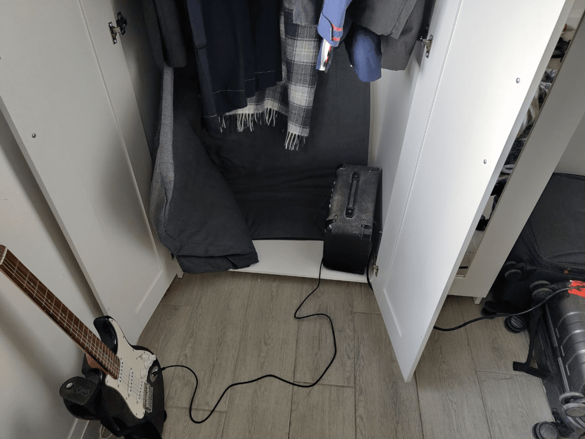

Since Konatsu managed to sit in there, it means that at least we can get in there and record podcasts with confidence, but we might be able to do other things with it, like record instrument playing. So we began our experiment, this time with Shiru taking the guitar into the wardrobe. The experiment didn’t go well – as it was impossible to play smoothly in the small space while crouching with the guitar, and the problem was completely insurmountable even from a standing position.
Solution
So we changed our mindset: if this is an electric guitar, why not put the amp in the wardrobe? so we did what was shown and experimented with it. The results looked pretty good.

You won’t see any recording device inside because I used my phone for photo shooting and I use my phone as my primary recording device
Considering that you can put the amp inside and play the instrument outside, any electronic instrument that can be connected to the amp can be recorded in this way. We also have an electronic piano at home, but didn’t actually get to play it because it was a pain in the ass to set up and wire up.